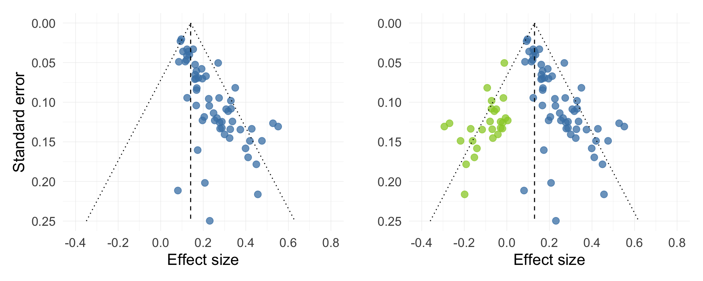
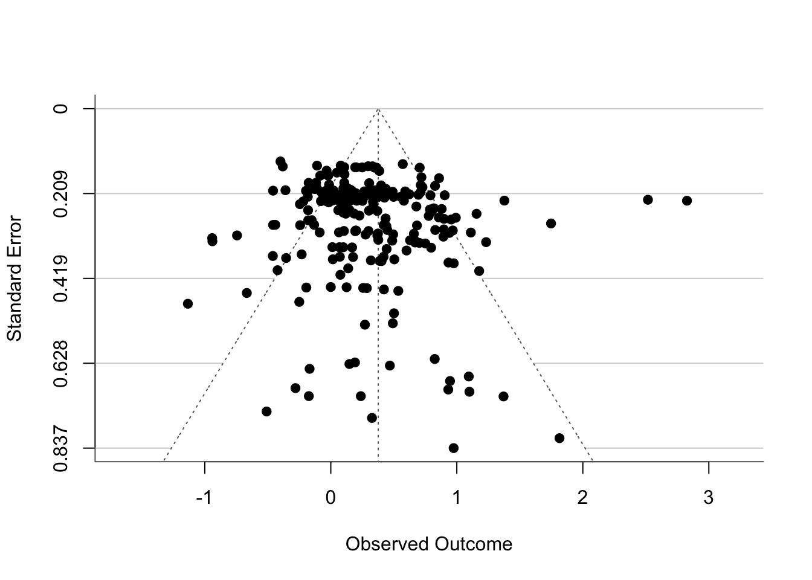
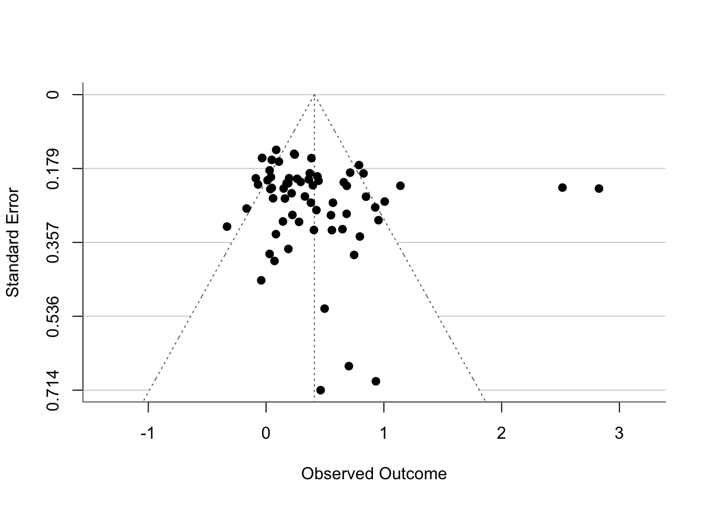

library(tidyverse)
library(easystats)
library(metafor)5 Advanced meta-analytic methods
Last week, we learned what meta-analysis is, how to calculate effect sizes, fit a model, visualise it, and how to run a moderation analysis. There were a lot of new concepts we needed to grapple with - as a result, we took certain shortcuts that could lead us to misleading conclusions. Today we’re going to do things the right way and expand our arsenal of meta-analytic tools. In this tutorial, we’ll learn:
- How to deal with dependent effect sizes.
- How to obtain robust standard errors for our model.
- How to address publication bias.
Let’s dive in!
5.1 Scenario
We’ll be working with the same meta-analysis by Danielson et al. (2024) as before. You can revisit the scenario section in the previous tutorial if you need a reminder. We’re looking at the effect of refutation texts on accuracy of beliefs about scientific contexts.
Packages:
We’ll need the following packages:
The data:
The data are stored in the danielson2024_es.csv. Note that this is a slightly different version of the data - it contains all the effect sizes ready to go so we don’t have the go through the harrowing process of calculating them again. Download the data and import it to Posit Cloud. Once you’ve done so, you can read the data into R by running:
refute_tib <- here::here("data/danielson2024_es.csv") |>
readr::read_csv()There are two different outcomes recorded in the dataset - accuracy of beliefs and inaccuracy of beliefs. As previously, we only want to keep the rows that record accurate beliefs:
acc_tib <- refute_tib |>
dplyr::filter(outcome_types == "acc_beliefs")5.2 Dependent effect sizes
In the Visualising Meta-analyses section last week, we briefly noted that there seem to be some studies (papers) that contributed more than one effect size. We encountered an example of this first hand in the data coding exercise at the beginning of the session: Frède (2008) collected information about the effect of refutation texts one day after the intervention, as well as thirty days later. These are both valid records that meet our inclusion criteria, so we were able to extract two effect sizes for the paper.
We can confirm this by counting the number of records for each study:
- 1
-
Use the
count()function to count the number of occurrences of each “study_id”. - 2
- Arrange the table by descending values of n
We can see that most of the studies we’re including contribute more than one effect size. For example, “Maria1990_1” contributes, “Liu 2018_1” contributes 12, and so on.
This is a very common situation in a meta-analysis 📖 that creates a problem - if several effect sizes come from the same sample, those effect sizes are going to be dependent. Sometimes researchers will deal with it by averaging the effect sizes within each study as we did before to create a forest plot:
avg_tib <- acc_tib |>
dplyr::summarise(
g = mean(g, na.rm = TRUE),
vg = mean(vg, na.rm = TRUE),
.by = study_id
)and then using these averaged effects to fit their meta-analytic model. This is by no means a satisfactory solution. We’re effectively sacrificing information for the sake of (minimal) convenience. The logic behind doing so is the following:
Say that Study 1 contributes the following effect sizes:
g1 = 0.32
g2 = -0.11
If these studies were to be included in a meta-analysis, they would both contribute, g1 drawing the estimate toward positive values g2 drawing it towards negative values, though less so because the effect itself is smaller than g1. We can take their average:
\[ (g_1 + g_2) / 2 \]
\[ (0.32 - 0.11) / 2 = 0.105 \]
We get a smaller positive effect, which in theory balances the impact of both effect sizes on the overall pooled estimate.
Of course, this is not equivalent as including all individual effect sizes in the model - The forest plot we produced in the Visualising Meta-Analyses section in the previous tutorial reports a very different overall effect size than the one we found in the main analysis. This is because averaging effect sizes doesn’t account for things like study sample sizes and variances, which determine the weight of the effects, which in turn determines how strongly each effect contributes to the overall estimate.
Conversely, ignoring the dependence among the effect sizes and just fitting a simple model using all of them like we did last week in the Fit the model section is the equivalent running a independent t-test on repeated measures data - we cannot trust the standard errors or the confidence intervals derived from such a model.
Instead, we can run the meta-analysis in form of a multilevel model with a random component 📖, in which the effect sizes are nested within studies. We replace rma() with the rma.mv() function:
1acc_rmamv <- metafor::rma.mv(
2 yi = g,
3 V = vg,
4 random = ~ 1 | study_id / es_id,
5 data = acc_tib
)- 1
-
Use the
rma.mv()function from metafor. - 2
- Specify the column with the effect sizes.
- 3
- Specify the column with the variances. Note the change - the argument is V nor vi.
- 4
-
Specify the random component. Here, we’re telling R that the effect sizes (
es_id) are nested within studies (study_id) - 5
- Dataset containing the effect sizes.
Inspect the results:
acc_rmamv
Multivariate Meta-Analysis Model (k = 222; method: REML)
Variance Components:
estim sqrt nlvls fixed factor
sigma^2.1 0.1416 0.3763 67 no study_id
sigma^2.2 0.0616 0.2481 222 no study_id/es_id
Test for Heterogeneity:
Q(df = 221) = 794.0298, p-val < .0001
Model Results:
estimate se zval pval ci.lb ci.ub
0.3766 0.0544 6.9276 <.0001 0.2701 0.4832 ***
---
Signif. codes: 0 '***' 0.001 '**' 0.01 '*' 0.05 '.' 0.1 ' ' 1We get two variance components this time, reflecting our nested structure.
sigma^2.1is the variability between the studies.sigma^2.2is the variability of the effect sizes within the studies.
As before, we get a significant test of heterogeneity among the effect sizes, Q(221) = 794.0298, p < .0001 .
Then we get our model results. The pooled effect is g = 0.3766 . This estimate will be different to the non-nested model. Because of the nesting structure, variances are treated differently, which affects the weights and how much each study contributes to the overall effect.
We’re going to pause before looking at the confidence intervals. When we supply the variances to the V argument in rma.mv(), the function uses these variances to approximate the covariance structure which is necessary for the estimation of random effects. However, this is only a rough approximation. The authors of metafor also note that using this argument alone might not capture the dependencies among the true population effects in their entirety. As a result, the standard errors and confidence intervals in our model might not be accurate.
5.3 Robust standard errors
This is a familiar territory. We can account for the shortcomings of the covariance approximation in rma.mv() by requesting robust standard errors:
metafor::robust(acc_rmamv, cluster = acc_tib$study_id)code
code Multivariate Meta-Analysis Model (k = 222; method: REML)
code
code Variance Components:
code
code estim sqrt nlvls fixed factor
code sigma^2.1 0.1416 0.3763 67 no study_id
code sigma^2.2 0.0616 0.2481 222 no study_id/es_id
code
code Test for Heterogeneity:
code Q(df = 221) = 794.0298, p-val < .0001
code
code Number of estimates: 222
code Number of clusters: 67
code Estimates per cluster: 1-16 (mean: 3.31, median: 2)
code
code Model Results:
code
code estimate se¹ tval¹ df¹ pval¹ ci.lb¹ ci.ub¹
code 0.3766 0.0543 6.9295 66 <.0001 0.2681 0.4851 ***
code
code ---
code Signif. codes: 0 '***' 0.001 '**' 0.01 '*' 0.05 '.' 0.1 ' ' 1
code
code 1) results based on cluster-robust inference (var-cov estimator: CR1,
code approx t-test and confidence interval, df: residual method)Here, we’re supplying the acc_rmamv model into the function. We’re also specifying the nesting variable by pulling the study_id from acc_tib using the dollar sign $.
The results are only a little bit different than before. The effect size itself is not affected, but the standard error is slightly smaller (on the fourth decimal place) and the confidence intervals are a little narrower as a result. Although in this case the difference is minimal, it’s recommended to make the robust() function part of the regular workflow - we lose nothing if the results don’t differ but we gain a much better accuracy in situations where the covariance approximation from rma.mv() doesn’t do a good job.
An alternative is to also add the clubSandwich = TRUE argument, which tweaks the standard error estimation to improve accuracy in samples with a small number of clusters. In our case, we have 67 clusters (listed in nlvls - number of levels - under Variance Components), so this option makes no (practical) difference, but it’s good to be aware of it.
metafor::robust(acc_rmamv, cluster = acc_tib$study_id, clubSandwich = TRUE) code
code Multivariate Meta-Analysis Model (k = 222; method: REML)
code
code Variance Components:
code
code estim sqrt nlvls fixed factor
code sigma^2.1 0.1416 0.3763 67 no study_id
code sigma^2.2 0.0616 0.2481 222 no study_id/es_id
code
code Test for Heterogeneity:
code Q(df = 221) = 794.0298, p-val < .0001
code
code Number of estimates: 222
code Number of clusters: 67
code Estimates per cluster: 1-16 (mean: 3.31, median: 2)
code
code Model Results:
code
code estimate se¹ tval¹ df¹ pval¹ ci.lb¹ ci.ub¹
code 0.3766 0.0543 6.9343 63.69 <.0001 0.2681 0.4851 ***
code
code ---
code Signif. codes: 0 '***' 0.001 '**' 0.01 '*' 0.05 '.' 0.1 ' ' 1
code
code 1) results based on cluster-robust inference (var-cov estimator: CR2,
code approx t-test and confidence interval, df: Satterthwaite approx)5.4 Publication bias
Publication bias can pose a big problem for a meta-analysis 📖. Our goals are to estimate the overall effect size and resolve discrepancies among effects (if there are any), however this can difficult to accomplish if we’re only getting part of the picture.
Studies reporting statistically significant hypothesis-confirming results are more likely to get published than studies with non-significant findings. Although there have been impressive efforts to combat this in the past few years (for example in the form of registered reports), the issue persists. Even if publishers grew conscience over night, there still remains the problem of studies that may have been conducted before any reform efforts had taken root and never got published. A non-significant result more often than not means that the effect size itself is too small to reach the significance threshold . So if we’re only sythesising results from published literature, the pooled effect size from our meta-analysis might end up being larger than the “true” effect size we’re trying to estimate.
Ideally, we should try to locate as many unpublished studies as possible. We can do so by:
Searching preprint servers
Checking databases of dissertations and theses
Checking funding records
Emailing authors known to publish in the area
Searching pre-registration records
Realistically, it’s likely that we will miss some unpublished studies despite our best efforts. If so, there are some statistical techniques that can help remedy this, at least to an extent. When can think of them in two broad categories:
Methods that check for publication bias and adjust the estimate if necessary (Funnel plot, trim-and-fill)
Methods that assume that publication bias is present and adjust the estimate accordingly (PET-PEESE, selection models).
Funnel plot
Funnel plot (Figure 5.1) is a scatterplot plot of effect sizes (x axis) against the standard errors (y axis). Standard errors are directly related to the calculation of p-values. If there is no publication bias, there should also be no systematic relationship between the standard errors and the effect sizes, and the scatter should be distributed symmetrically on either side of the pooled effect (the vertical line in the middle). Figure 5.1 shows an example of what an extremely asymmetric funnel plot might look like (left) and what the same plot would look like if we were to include the missing studies (right).

We can use the funnel() function from metafor to create a quick funnel plot:
metafor::funnel(acc_rmamv, back = "white", hlines = "lightgrey")
Based on visual inspection alone, the distribution looks fairly symmetrical. It’s a little difficult to tell because there are a lot of points which may be overlapping, but at a glance this is not a cause for concern.
Trim and fill
Trim & fill is a function that accounts for the asymmetry in the funnel plot by imputing any potentially missing studies in order to restore symmetry.
Unfortunately, all the functions we’ll cover from here onwards have not been developed to be able to cope with the multilevel structures defined in the rma.mv() function. We have two suboptimal options:
Use a simple
rmamodel with all the effect sizes, ignoring the multilevel structure.Use an
rmamodel based on the averaged effect sizes.
In research, decisions like this are all too common. The important thing is to make a call to the best of our ability, be transparent about it, and justify it. Here’s my decision: we’re going to fit an rma model based on averaged effect sizes. In my opinion, this is lesser of the two evils because (1) the effect size from this model (~0.41) is closer to the rma.mv effect size (~0.38) than the effect size from a simple rma model (~0.30) that ignores the nesting structure. This will make it easier to evaluate any effect size attenuation due to publication bias; (2) the confidence intervals from this model will be valid, whereas the confidence intervals from the naive rma model will not.
If this was for a paper, I would probably run both versions to make sure the methods are giving us consistent results (I checked and they do…), and then report the alternative method in an appendix so that other researchers who are unhappy with our judgement can look into it.
So we refit the model using the avg_tib we created earlier:
avg_rma <- metafor::rma(
yi = g,
vi = vg,
data = avg_tib
)Now we can run trim and fill:
avg_tf <- metafor::trimfill(avg_rma)Inspect the results:
avg_tf
Estimated number of missing studies on the left side: 0 (SE = 4.1027)
Random-Effects Model (k = 67; tau^2 estimator: REML)
tau^2 (estimated amount of total heterogeneity): 0.2178 (SE = 0.0493)
tau (square root of estimated tau^2 value): 0.4667
I^2 (total heterogeneity / total variability): 81.05%
H^2 (total variability / sampling variability): 5.28
Test for Heterogeneity:
Q(df = 66) = 333.3778, p-val < .0001
Model Results:
estimate se zval pval ci.lb ci.ub
0.4102 0.0655 6.2608 <.0001 0.2818 0.5387 ***
---
Signif. codes: 0 '***' 0.001 '**' 0.01 '*' 0.05 '.' 0.1 ' ' 1The most important bit is at the top:
Estimated number of missing studies on the left side: 0 (SE = 4.1027)
The test didn’t impute any studies (because it didn’t detect any asymmetry), so the overall effect size is the same. We can confirm this with a funnel plot:
metafor::funnel(avg_tf, back = "white", hlines = "lightgrey")
Granted, there’s not much else to see, given that nothing has been imputed. Just for your reference, a funnel plot with imputed studies would look like this (this is just an example model unrelated to our dataset):

PET-PEESE
PET-PEESE stands for “Precision Effect Test - Precision Effect Estimate with Standard Error”. It’s a another test that assumes the relationship between the effect size and the standard error to be indicative of possible publication bias. In PET-PEESE, two models are fitted - PET and PEESE.
PET: a weighted linear model with standard error as the predictor. The intercept is taken as the meta-analytic estimate, while the the standard error is considered a “covariate” adjusting for publication bias.
PEESE: Same as PET, except we include the the squared standard error to adjust the overall effect.
PET generally performs better when the true effect size is zero. PEESE performs better when it’s different from zero. Therefore if the p-value associated with the intercept in the PET model is non-significant (indicating the estimate is not different from zero), we interpret the PET intercept. If it is significant, we interpret the PEESE intercept instead. That’s the PET-PEESE procedure.
First we need to calculate the standard error. We can do so by taking the square root of the variances associated with our effect sizes:
avg_tib <- avg_tib |>
dplyr::mutate(
seg = sqrt(vg)
)Then we’re going to fit the two models using lm():
avg_pet <- lm(
1 g ~ seg,
2 weights = 1/vg,
data = avg_tib
)
avg_peese <- lm(
3 g ~ I(seg^2),
weights = 1/vg,
data = avg_tib
)- 1
- Specify the formula, in which g is predicted from the standard error.
- 2
- Define weights as the inverse of the variance (1/vg), so that studies with small variance are assigned greater weight.
- 3
-
Tweak the formula for PEESE, so that g is predicted from the square of the standard error. The
I()function is useful if we need to make calculations on the fly.
Let’s use compare_models() from easystats to check the results. We’re adding the argument select = "minimal" to also get p-values, which we need in order to make the decision between PET and PEESE:
compare_models(avg_pet, avg_peese, select = "minimal") |>
display()| Parameter | Coefficient (CI) (avg_pet) | p (avg_pet) | Coefficient (CI) (avg_peese) | p (avg_peese) |
|---|---|---|---|---|
| (Intercept) | 0.12 (-0.28, 0.53) | 0.545 | 0.31 ( 0.11, 0.50) | 0.002 |
| seg | 1.16 (-0.65, 2.96) | 0.205 | ||
| seg^2 | 1.30 (-1.62, 4.21) | 0.378 | ||
| Observations | 1323 | 1323 |
We’re only interested in the first line associated with the intercept. The first set of columns tells us about PET, the second set tells us about PEESE. Remember, if PET is significant, our final estimate is PEESE. Otherwise we stick with PET. The p-value for PET is not significant, p = 0.545. Therefore our PET-PEESE estimate is 0.12 (-0.28, 0.53). Comparing this to the unadjusted meta-analytic estimate of 0.41, that’s quite a large difference!
Selection models
Selection models allow us to model different levels of publication bias and see how our estimate would change if effect sizes with certain p-values had lower probability of publication. For example, we know that 0.05 is the magical cut-off point that publishers like. We could model a reality where studies with p-values below 0.05 are absolutely certain to be published (probability of publication is 1), whereas studies with p-values above 0.05 have only 50/50 or 0.5 probability of publication:
metafor::selmodel(
avg_rma,
1 type = "stepfun",
2 steps = c(0.05),
3 delta = c(1, 0.5),
) |>
4 broom::tidy(conf.int = TRUE) |>
display(digits = 3)- 1
-
The
type = "stepfun"argument allows us to fit a model depending on the p-value “steps” that change the probability of publication. - 2
- Define the p-value steps. Here we’re just defining one step, 0.05.
- 3
- Define the probability of publication. The first value determines the probability of studies with p < 0.05, the second step determines the probability of studies with p-values between 0.05 and 1.
- 4
-
A little helper function that tidies up the otherwise messy output and includes confidence intervals for our estimate (
conf.int = TRUE).
| term | type | estimate | std.error | statistic | p.value | conf.low | conf.high |
|---|---|---|---|---|---|---|---|
| overall | summary | 0.268 | 0.067 | 4.025 | 5.709e-05 | 0.137 | 0.398 |
In this version of the reality, our estimate drops down to 0.27 [0.14, 0.40]. However, let’s try to model something more nuanced instead:
If p < 0.05, delta (probability of publication) will be 1
If p is between 0.05 and 0.1, delta will be 0.7
If p is between 0.1 and 0.5, delta will be 0.6
For any larger p-values, delta will be 0.5
This would be a moderate level of publication bias where non-significant p-values still have probability of getting published above chance, but this probability is substantially lower compared to studies with significant results.
selmodel_moderate <- metafor::selmodel(
avg_rma,
type = "stepfun",
steps = c(.05, 0.1, 0.5),
delta = c(1, 0.7, 0.6, 0.5),
) |> broom::tidy(conf.int = TRUE)
selmodel_moderate |>
display(digits = 3)| term | type | estimate | std.error | statistic | p.value | conf.low | conf.high |
|---|---|---|---|---|---|---|---|
| overall | summary | 0.273 | 0.070 | 3.922 | 8.783e-05 | 0.136 | 0.409 |
Now let’s model a severe case of publication bias. Here, the probability of publication drops dramatically for ps > 0.05, down to 0.5, 0.4, and 0.1 for the steps outlined above:
selmodel_severe <- metafor::selmodel(
avg_rma,
type = "stepfun",
steps = c(.05, 0.1, 0.5),
delta = c(1, 0.5, 0.4, 0.1),
) |> broom::tidy(conf.int = TRUE)
selmodel_severe |>
display(digits = 3)| term | type | estimate | std.error | statistic | p.value | conf.low | conf.high |
|---|---|---|---|---|---|---|---|
| overall | summary | -0.071 | 0.102 | -0.695 | 0.487 | -0.270 | 0.129 |
In this scenario, the estimate is massively different, at g = -0.07 [-0.27, 0.12].
Here we are, with several wildly different estimates and conflicting results for publication bias adjustment methods. How do we reconcile this? Transparency is the best policy, and we can achieve this with a sensitivity analysis.
Other methods for dealing with publication bias
Are there methods for addressing publication bias? Oh yes! Am I going to write about them? Absolutely not! Here are some other methods you might come across when reading papers:
Rosenthal’s Fail Safe N
Orwel’s Fails Safe N
p-curve
p-uniform
WAAP-WLS
RoBMA (Robust Bayesian Meta-Analysis)
Some of these are extremely promising and interesting. Some of these are a plague upon the meta-analytic world that should never have existed. Should you come across any of these during your adventures, I encourage you to read-up on them and decide for yourself.
5.5 Sensitivity analysis
Sensitivity analysis is a general term for an analysis in which we present how sensitive our model is to various assumptions (such as those about publication bias). The important thing here is to only compare estimates that are sensible - if we fit enough models, we will eventually find discrepancies anywhere. In this situation, we’re going to discard the funnel plot and trim & fill. Aside from publication bias, funnel plot asymmetry can be caused by heterogeneity and missing moderators. We know that our effects are heterogeneous, and we also know that none of the moderators are able to explain this heterogeneity Danielson et al. (2024) . PET-PEESE can also show bias under heterogeneity, however this is more of concern in meta-analyses with a small number of primary effect sizes. Here, we have a sample of 67 studies, which is not small by meta-analytic standards. So we want to compare:
The original estimate.
PET-PEESE estimate.
Estimate from a selection model assuming moderate publication bias.
Estimate from a selection model assuming severe publication bias.
If you’ve (understandably) had enough of coding, you can skip directly to the table below. In the next optional section, we’re going to do a bit of data wrangling to pull the values from the different models (the ones just listed) and arrange them into a neat table.
Optional: Collating effect sizes from different tables
We already have objects selmodel_moderate and selmodel_severe which are in a pretty good state. For PET-PEESE, the PET estimate was selected, so we can use broom::tidy() to tidy up the output:
avg_pet_tidy <- avg_pet |>
broom::tidy(conf.int = TRUE) |>
dplyr::filter(term == "(Intercept)")We can do the same for the rma.mv object:
acc_rmamv_tidy <- acc_rmamv |> broom::tidy(conf.int = TRUE)These are all “tidy” objects, so we can combine them into a single table:
pb_mods_tib <- dplyr::bind_rows(
acc_rmamv_tidy, avg_pet_tidy, selmodel_moderate, selmodel_severe
)
pb_mods_tib# A tibble: 4 × 8
term type estimate std.error statistic p.value conf.low conf.high
<chr> <chr> <dbl> <dbl> <dbl> <dbl> <dbl> <dbl>
1 overall summary 0.377 0.0544 6.93 4.28e-12 0.270 0.483
2 (Intercept) <NA> 0.124 0.204 0.608 5.45e- 1 -0.283 0.530
3 overall summary 0.273 0.0695 3.92 8.78e- 5 0.136 0.409
4 overall summary -0.0707 0.102 -0.695 4.87e- 1 -0.270 0.129This is pretty good, but there are some unnecessary columns - we can make the table more concise. We’ll use the transmute() function which is vastly unappreciated in the tidyverse community. It allows us to simultaneously create new columns, rename old columns, and drop columns we don’t want to keep:
pb_mods_tib <- pb_mods_tib |>
dplyr::transmute(
model = c("Original MA", "PET-PEESE", "Modetate PB", "Severe PB"),
estimate = estimate,
ci_lower = conf.low,
ci_upper = conf.high,
p = p.value
)
pb_mods_tib |>
display(digits = 3)| model | estimate | ci_lower | ci_upper | p |
|---|---|---|---|---|
| Original MA | 0.377 | 0.270 | 0.483 | 4.279e-12 |
| PET-PEESE | 0.124 | -0.283 | 0.530 | 0.545 |
| Modetate PB | 0.273 | 0.136 | 0.409 | 8.783e-05 |
| Severe PB | -0.071 | -0.270 | 0.129 | 0.487 |
Look at that! Those who skipped this section have no idea what sort of primal joy they’ve just missed out on.
pb_mods_tib |>
display(digits = 3)| model | estimate | ci_lower | ci_upper | p |
|---|---|---|---|---|
| Original MA | 0.377 | 0.270 | 0.483 | 4.279e-12 |
| PET-PEESE | 0.124 | -0.283 | 0.530 | 0.545 |
| Modetate PB | 0.273 | 0.136 | 0.409 | 8.783e-05 |
| Severe PB | -0.071 | -0.270 | 0.129 | 0.487 |
Now we have all the effect sizes in one table so we can compare them more easily. All the effect sizes apart from the Severe PB model suggest an effect in favour of refutation texts. Notably, PET-PEESE is the smallest positive estimate and has the widest confidence interval that includes zero associated with it. Under severe publication bias, the effect could be slightly negative based on both the point estimate and the lower confidence interval. All four upper bounds of confidence intervals indicate a positive effect. Clear as a mud, eh?
The conclusion I’d draw from this is that the effect is likely to be in favour of refutation texts (a positive value of g), but it’s probably smaller than the original meta-analysis suggested. If publication bias is, in fact, severe, the effect could be zero or in the opposite direction. Our estimate is therefore sensitive to the assumptions we make about the data generating process. Either way, there is a lot of uncertainty around this estimate, which aligns with the high heterogeneity estimates and unsuccessful moderation analysis.
5.6 Moderation analysis
We’ve written off moderation partially because of what we found last week, but mostly because of the extensive tests reported in Danielson et al. (2024) . Just to complete your toolkit, this is how we run a moderation analysis while accounting for the multi-level structure:
acc_rmamv_mod <- metafor::rma.mv(
yi = g,
V = vg,
mods = ~ sample_screening + text_length,
random = ~ 1 | study_id / es_id,
data = acc_tib
)code Warning: 61 rows with NAs omitted from model fitting.acc_rmamv_mod |>
broom::tidy(conf.int = TRUE) |>
display(digits = 3)| term | type | estimate | std.error | statistic | p.value | conf.low | conf.high |
|---|---|---|---|---|---|---|---|
| intercept | summary | 0.359 | 0.063 | 5.675 | 1.385e-08 | 0.235 | 0.483 |
| sample_screeningscreened | summary | -0.014 | 0.100 | -0.141 | 0.888 | -0.211 | 0.182 |
| text_length | summary | -2.876e-04 | 3.442e-04 | -0.836 | 0.403 | -9.623e-04 | 3.871e-04 |
We can interpret these in the same way we did last week.
Easy pet-peesy.
Until next time!
5.7 Report
We have two excellent (and very different) examples of a write-up at our disposal:
Danielson et al. (2024) report the meta-analysis explored in these tutorials. The paper is full of sensible and justifiable choices (some of them different to what we covered here). It’s an example of a write-up that explores a broad range of meta-analytic outcomes and moderators.
Brewin and Field (2024) is the meta-analysis covered in the book chapter 📖, and another great example of a report. In contrast with Danielson et al. (2024), Brewin and Field (2024)’s write-up is focused on a narrowly defined objective rather than broad exploration.
5.8 Exercises
What does this code do?
Here’s all the code we have written in this section. Can you remember what each line of each codechunk does? Are there any codechunks that you struggle to make sense of? Make sure to revisit the section in which it is used and take notes.
acc_tib |>
dplyr::count(study_id) |>
dplyr::arrange(desc(n)) acc_rmamv <- metafor::rma.mv(
yi = g,
V = vg,
random = ~ 1 | study_id / es_id,
data = acc_tib
)metafor::robust(acc_rmamv, cluster = acc_tib$study_id)metafor::robust(acc_rmamv, cluster = acc_tib$study_id, clubSandwich = TRUE) metafor::funnel(acc_rmamv, back = "white", hlines = "lightgrey")avg_tf <- metafor::trimfill(avg_rma)avg_tib <- avg_tib |>
dplyr::mutate(
seg = sqrt(vg)
)avg_pet <- lm(
g ~ seg,
weights = 1/vg,
data = avg_tib
)
avg_peese <- lm(
g ~ I(seg^2),
weights = 1/vg,
data = avg_tib
)compare_models(avg_pet, avg_peese, select = "minimal") |>
display()selmodel_moderate <- metafor::selmodel(
avg_rma,
type = "stepfun",
steps = c(.05, 0.1, 0.5),
delta = c(1, 0.7, 0.6, 0.5),
) |> broom::tidy(conf.int = TRUE)
selmodel_moderate |>
display(digits = 3)acc_rmamv_mod <- metafor::rma.mv(
yi = g,
V = vg,
mods = ~ sample_screening + text_length,
random = ~ 1 | study_id / es_id,
data = acc_tib
)
acc_rmamv_mod |>
broom::tidy(conf.int = TRUE) |>
display(digits = 3)Worksheet
As previously, the worksheet focuses on the analysis of inaccuracy scores. If you’re using a separate quarto file from your tutorial notes, you’ll need to re-read the data stored in the file danielson2024_es.csv .
Use the tutorial to complete the following tasks:
- Filter the dataset so it only contains rows where the recorded outcome is belief inaccuracy. All effect sizes are already computed.
- Check how many studies provide multiple effect sizes.
- Fit a model accounting for dependence among the effect sizes and adjust the standard errors with a robust variance estimator.
- Run a sensitivity analysis with selection models assuming (moderate level of publication bias) (2) severe level of publication bias. For each model, only define steps at p = 0.05 and p = 0.1 (note: you will need to define three delta values for each model).
- Compare your results to the results reported in Danielson et al. (2024) . Do your results align with what is reported in the paper?
Check worksheet values
Once you’ve finished the worksheet, you can ask me to look through your work and give you feedback. Remember that you should also practice writing up the results in a brief report, not just running the code. If you’re stuck, you can use the quiz below to guide you.
You can also use the quiz below - if you fitted the models the correctly, your answers should match the values below.
Worksheet check
How many studies provide more than one effect size for inaccurate beliefs?
Within study heterogeneity: 0.0665116
Overall pooled estimate: -0.3806879
Robust standard error: 0.0684144
Publication bias - probability of publication (delta) was set at:
1, 0.7, 0.5 for moderate bias
1 0.5, 0.1 for severe bias
Other values are justifiable, but if you use the ones above, you should get:
| term | type | estimate | std.error | statistic | p.value | conf.low | conf.high |
|---|---|---|---|---|---|---|---|
| overall | moderate | -0.380 | 0.081 | -4.678 | 2.890e-06 | -0.539 | -0.221 |
| overall | severe | -0.399 | 0.069 | -5.744 | 9.234e-09 | -0.535 | -0.263 |
The overall pooled estimate is in line with what is reported in Danielson et al. (2024) :
The results of the publication bias analysis align with the conclusion reported in Danielson et al. (2024) :